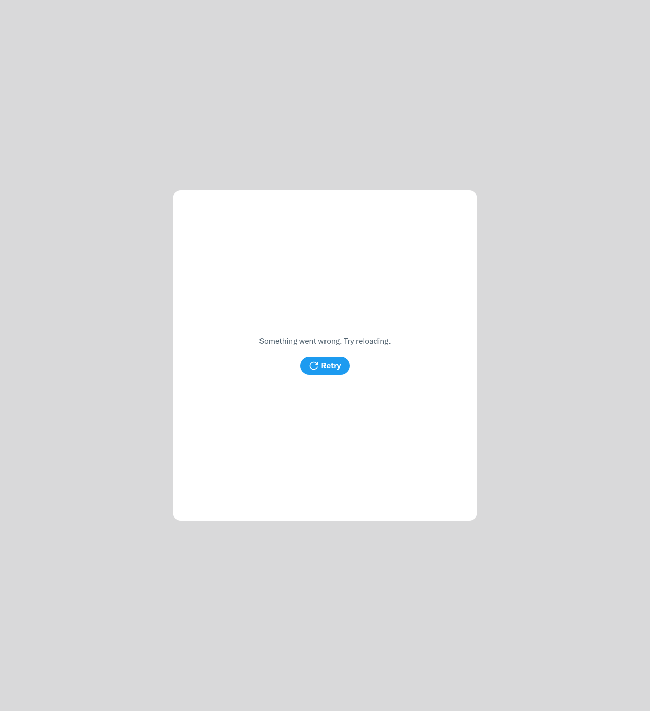
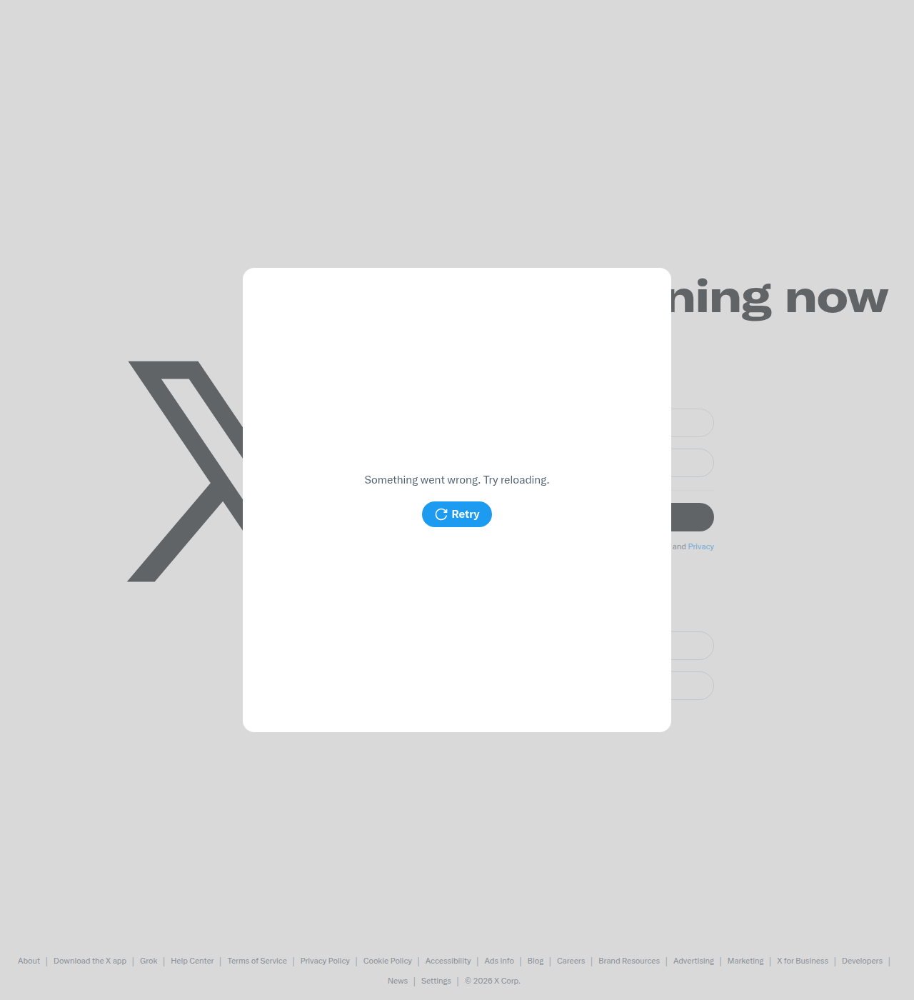

Redacted for public view — internal paths abstracted, secrets stripped.
X launch execution blocker
Target account: @profitb4fees
Live site: https://profitafterfees.com/
Task attempted
Execute the first founder-style X launch post using the owner-approved brand account so the project can get its first real traffic and user feedback.
Why this was the highest-leverage move
The site is already live on the approved custom domain, public copy has been cleaned, and passive search pickup is still effectively zero. The next meaningful learning step is a real distribution event that can create first clicks, replies, and usage.
Result
The launch post could not be executed from this sandbox because X login is failing before credentials can be entered.
Evidence gathered
1. the project's PRIVATE_CREDENTIALS.md config confirms the owner explicitly provided approved credentials for AutoBox use with the @profitb4fees account.
2. Browser automation on https://x.com/i/flow/login consistently rendered only:
Something went wrong. Try reloading.Retry- no username/email or password inputs
3. A Playwright run using the locally cached Chromium browser reproduced the same failure:
- page title loaded normally
- body text showed only the same X login error state plus generic homepage text
- input count was
0
4. Legacy login routes (https://mobile.twitter.com/session/new, https://twitter.com/session/new, https://x.com/session/new) redirected back into the same broken login flow or a non-working page, and still exposed no usable login form.
Artifact evidence
artifacts/x-login-attempt.pngartifacts/x-login-clicked.png
Decision made
Treat this as a technical execution blocker, not a copy or product blocker. Do not drift into more internal site work while first distribution is still unresolved.
Immediate next move
Fastest zero-cost path: have the owner publish the prepared launch copy manually from a normal browser session outside this sandbox using the already-approved @profitb4fees account.
Suggested post copy:
If you price digital products with Stripe, the processing fee is only part of the problem.
Coupons, VAT, affiliates, refunds, and fulfillment costs can make a product look profitable when it is not.
I built a free calculator that shows your Stripe fee, total costs, net profit, margin, and break-even price in one pass.
Useful for templates, courses, and micro-SaaS pricing.
https://profitafterfees.com/
What to capture immediately after manual post
1. Public post URL
2. Any replies or reposts
3. Any visit or usage signal that appears after the post
Cost
- Cash required now: $0.00
- Current experiment cash balance: $188.75
Bottleneck status
The business bottleneck is still first distribution, but the blocking layer has shifted from account approval to sandbox X login failure. The product is ready enough for real traffic; the environment is what failed this run.


{kind=link}